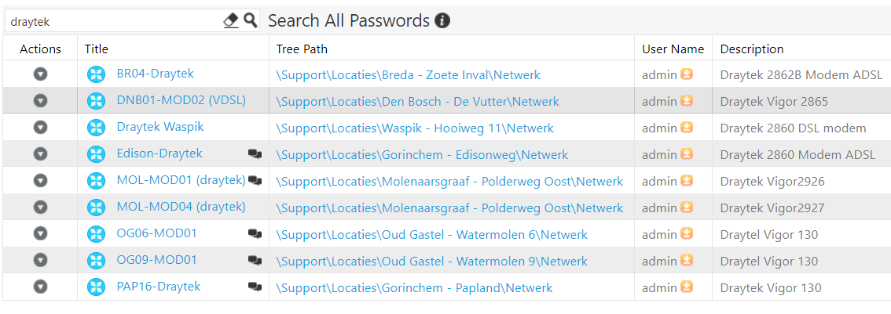

Drayteks firmware bijwerken
Handleiding firmware bijwerken Drayteks
Zoek voor een actueel overzicht van de Drayteks in Passwordstate op de term "Draytek".
Medio maart 2023 betrof het de volgend Drayteks".

Als een draytek gebruikt wordt bij een primaire verbinding kan het
bijwerken van de firmware alleen in overleg met de vestiging omdat de
draytek gaat herstarten.
Verder is er nog een verschil tussen Drayteks die in bridge-mode staan
en degene die dat niet staan.
De drayteks kunnen alleen vanaf het lokale netwerk benaderd worden.
Op de website "Firmware - DrayTek"
kan de firmware per type gedownload worden.
Check bij system information welke soort firmware gebruikt wordt en installeer dezelfde.
In onderstaande voorbeeld MDM1.
Kies dan de "xxxxx.all" versie, deze is met behoud van instellingen.
Om het IP-nr van de Draytek te achter halen kan gebruik gemaakt worden
van netwerktekeningen, gegevens uit Passwordstate of van de
interface-gegevens in de firewall (indien niet in bridge-mode).
Bijvoorbeeld is onderstaand geval is de Draytek op IP-nr 10.20.2.1 te
benaderen.

Maak voordat je gaat upgraden altijd een configuratie backup, dit kan bij System Maintenance > Configuration Backup.
Niet in Bridge mode
Als de Draytek niet in Bridge-mode staat dan bouwt de Draytek de
verbinding op met DSL (PPPoA).


Log in met gegevens uit Passwordstate.
Kies voor "System Maintenance \ Firmware upgrade" en blader naar de
firmware-file.

Kies voor upgrade.

Klik op Restart.


In Bridge mode
In bridge mode geeft de Draytek het signaal alleen door.
De Sophos bouwt de connectie op met de DSL-lijn (PppoE)


Stel je wil deze toch benaderen.
Kies bij Hardware een andere interface.
Maak een nieuwe Ethernet interface aan en zet die op DHCP
Je kunt dan het IP zien bij de interface en hier kun je op aanloggen.
Kies na de actie weer de oorspronkelijke interface.